مكتبة التفسير والحديث
مكتبة التفسير والحديثاقْرَأْ بِاسْمِ رَبِّكَ الَّذِي خَلَقَ
اقرأ القرآن بتفاسيره،
والحديث بإسناده
60 تفسيرًا و17 كتابًا في الحديث و17 شرحًا و8 معاجم قديمة و29 قارئًا في برنامج واحد. اقرأ واستمع واحفظ؛ وحين تتلو يستمع إليك البرنامج وينبّهك إلى الكلمة التي تركتها. ابحث وشارك. الواجهة بالعربية والإنجليزية والتركية. مجاني، ولا يحتاج إلى الإنترنت بعد التثبيت.
تنزيل مجاني لـ Windowsفيديو تعريفي (3 دقائق، بالتركية) · التلاوة: محمود خليل الحصري (EveryAyah)
القرآن
افتح آية فيظهر نصها العربي وترجمتها والتفاسير التي اخترتها في شاشة واحدة.
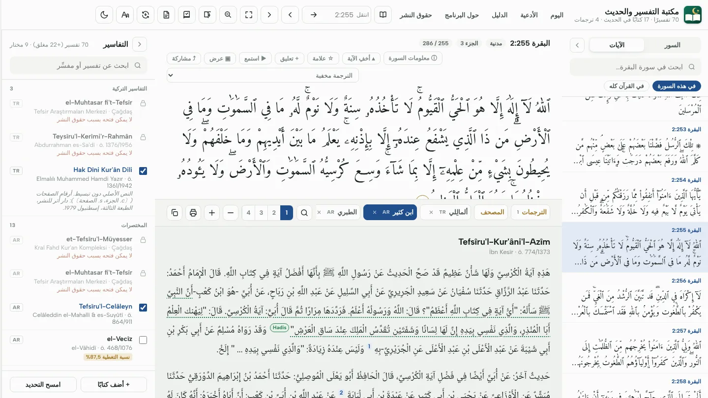
60 تفسيرًا بنقرة واحدة
من الطبري إلى ألمالِلي؛ تفاسير المأثور والدراية والإشارة، كلٌّ بجانب الآية.
- التنقل بالتبويبات: الطبري، القرطبي، الرازي، ابن كثير، ألمالِلي…
- الترجمات: الإنجليزية (صحيح إنترناشونال) وثلاث تركية: ألمالِلي (1935)، مجمع الملك فهد، مركز رواد
- وضع العرض: ملء الشاشة بخط كبير لدروس المساجد وأجهزة العرض
- التعليقات والتظليل والعلامات؛ مع التصدير إلى Word وPDF
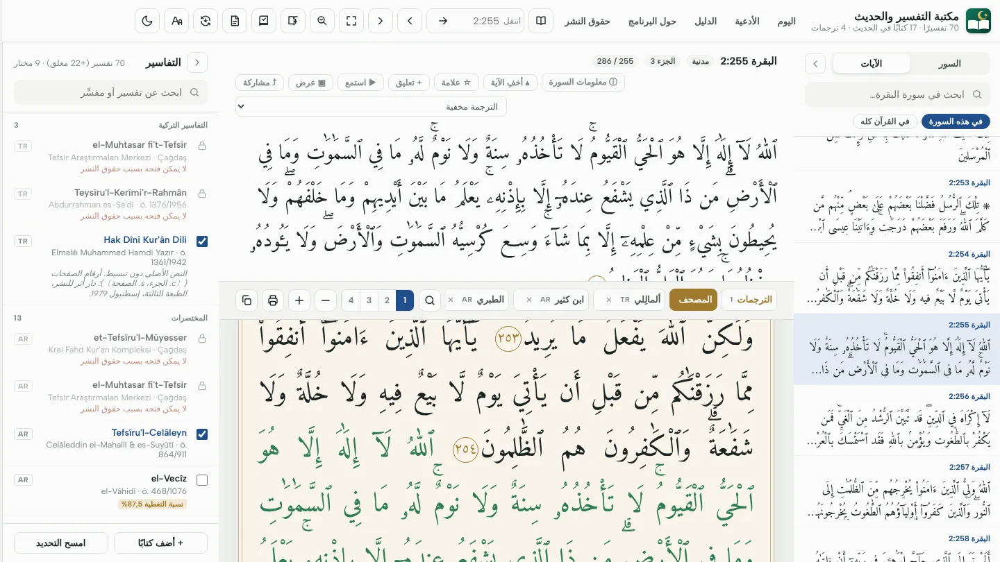
تخطيط صفحات مصحف المدينة
604 صفحات، بنهايات الأسطر المطبوعة وعناوين السور المزخرفة؛ وألوان التجويد اختيارية.
- علامات المصحف التركي: السكون المستدير والتنوين المعتاد (أو رسم المدينة إن شئت)
- خط مجمع الملك فهد برواية حفص
- خطة القراءة والختمة: هدف يومي وتتابع وتقدُّم
استمع واحفظ
29 قارئًا، وقراءة بملء الشاشة على الهاتف، وجدول مراجعة يثبّت الحفظ، ومتابعة للتلاوة تستمع إليك وأنت تقرأ.


29 قارئًا
العفاسي، الحصري، عبد الباسط، المنشاوي، السديس، الشريم، الشاطري، الغامدي وغيرهم؛ ومنها التلاوات المجوَّدة والتعليمية. وتُكرَّر كل آية بالعدد الذي تريده.
الاستماع دون اتصال
نزِّل السورة أو الجزء أو القرآن كله بصوت القارئ الذي تختاره، واستمع في الطريق أيضًا.
بصوتك أنت
سجِّل تلاوتك في شاشة الحفظ، ثم استمع إليها بعد القارئ وقارن. تبقى التسجيلات في جهازك فقط.
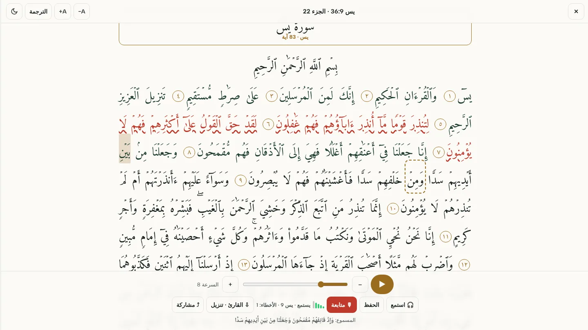
يستمع إليك وأنت تقرأ
اقرأ أمام الميكروفون: يسير النص معك، وإذا تركت كلمة أو أخطأت فيها صدر صوت تنبيه ولُوّنت الكلمة بالأحمر. للحفظ ومراجعة المحفوظ.
- مدرَّب على تلاوة القرآن: التعرف على الكلام (Tarteel)؛ وفي الحفظ تنكشف الآيات المخفية كلما قرأتها
- الكلمات والجمل والآيات المتروكة تُكتشف؛ وتختار موضع البدء بالنقر على آية
- صوتك لا يغادر جهازك: يجري التعرف على الجهاز نفسه؛ ويُنزَّل النموذج مرة واحدة (نحو 120 م.ب)
- تراقب الكلمات لا الحركات ولا دقائق التجويد؛ ويلزم 2.5 غ.ب على الأقل من الذاكرة الحرة
الحديث
17 كتابًا و183373 حديثًا، بأسانيدها وشروحها ورواتها وأحكام العلماء.
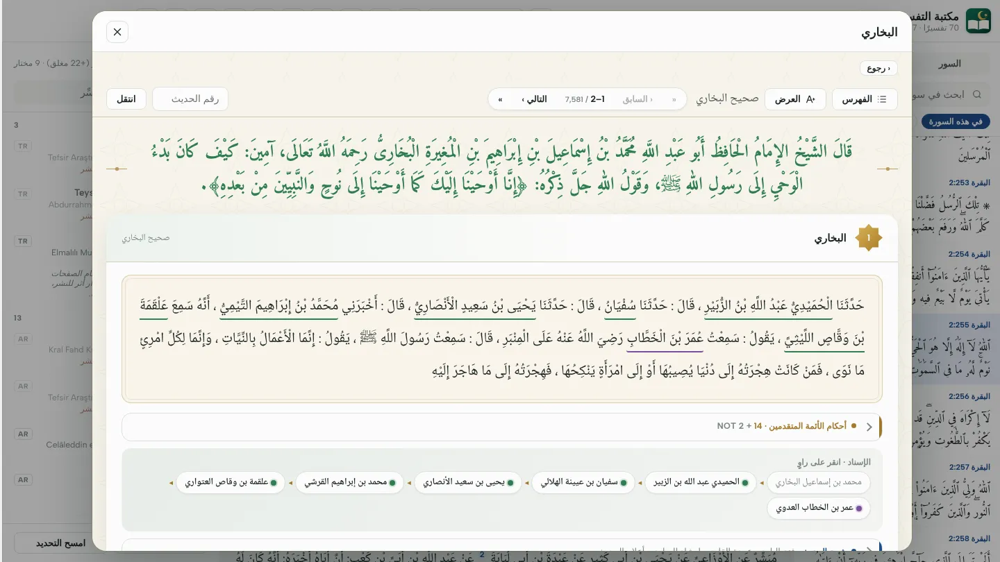
كل راوٍ مميَّز
المس الرواة في الإسناد؛ وأحكام النقاد المتقدمين تحت الحديث مباشرة.
- الكتب الستة، والموطأ، والمسند، والدارمي، والمستدرك، وابن حبان، وابن خزيمة، والمصنفات، والبيهقي، ومجمع الزوائد
- مقارنة الروايات: الألفاظ المختلفة للحديث نفسه
- تقرير التخريج (Word) والتعليقات على الأحاديث
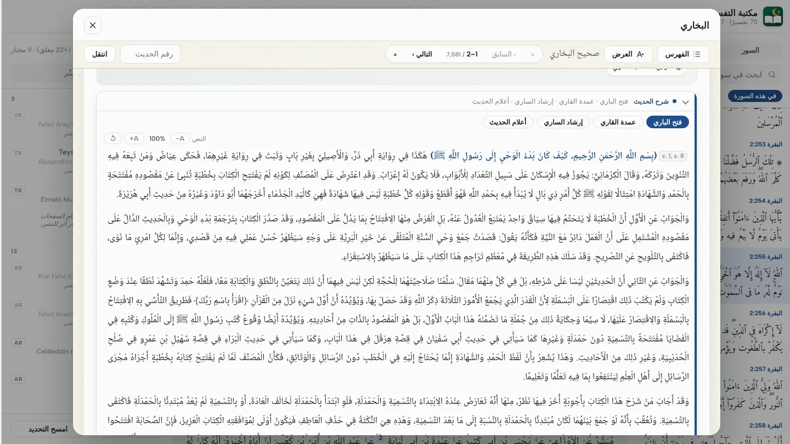
17 شرحًا تحت الحديث
فتح الباري، عمدة القاري، المنهاج، عون المعبود، تحفة الأحوذي…
- البحث في الشروح
- مع الجزء والصفحة؛ ويمكن الإحالة إليها مصدرًا
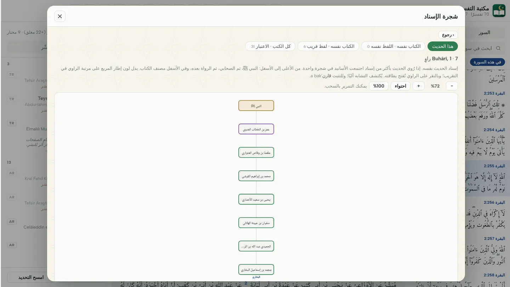
شجرة الإسناد
أسانيد الحديث في كل الكتب في شجرة واحدة، مع تمييز الراوي المشترك (المدار).
- الصلة بين راويين
- فهرس الموضوعات: الأحاديث بحسب الموضوع
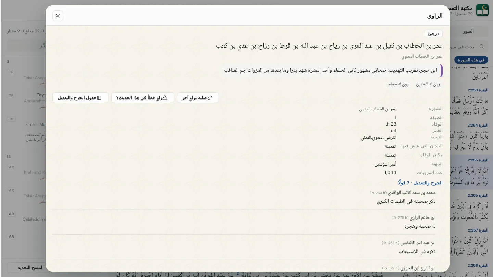
معلومات الرواة
الشيوخ والتلاميذ والطبقة والوفاة وأقوال الجرح والتعديل؛ وتراجم التقريب والتهذيب والكاشف والميزان.
- كل مرويات الراوي والبحث فيها
- الإبلاغ بنقرة واحدة عن راوٍ طوبق خطأً في الإسناد
المعجم والبحث والمشاركة
الكلمة التي تريد معناها، والعبارة التي تبحث عنها، والآية التي تريد إرسالها إلى من تحب.
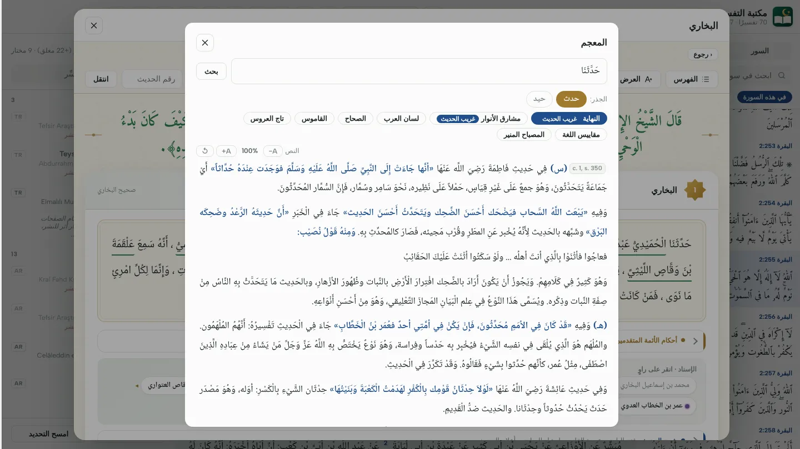
المس الكلمة
النهاية، لسان العرب، تاج العروس، القاموس… ثمانية معاجم قديمة، مع تمييز الكلمات الغريبة.
- مشارق الأنوار و الفائق لغريب الحديث
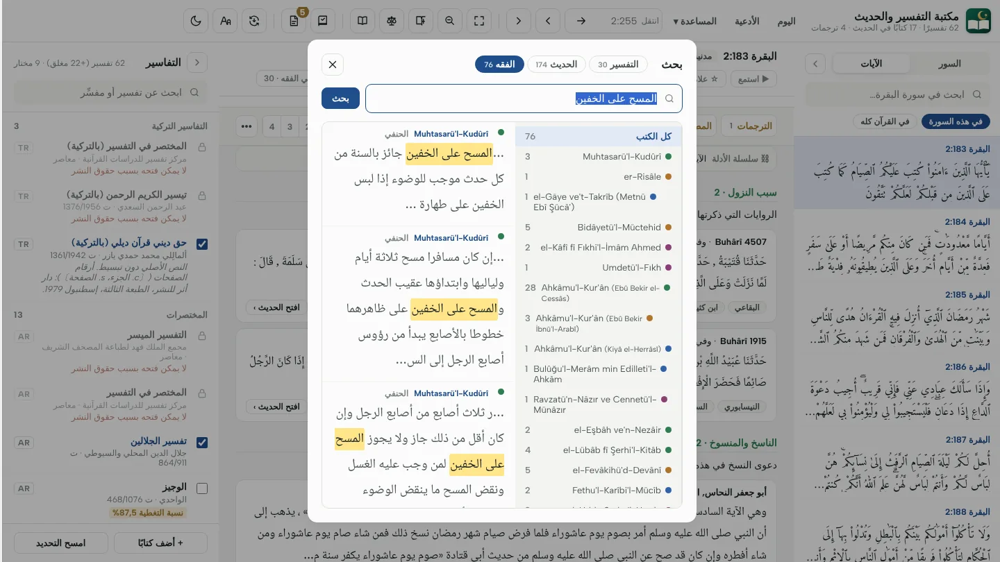
البحث في التفاسير والترجمات
كلمة عربية أو إنجليزية أو تركية، في كل التفاسير والترجمات في ثوانٍ.
- العبارة بعينها أو كل الكلمات؛ مع التصفية بحسب الكتاب
- لا يُعتد بالتشكيل والعلامات في البحث

بطاقة الآية والحديث
حوِّل آية مع ترجمتها، أو حديثًا مع كتابه ورقمه، إلى صورة أنيقة.
- مربع، عمودي، قصة أشكال؛ وأربعة ألوان
- في الهاتف إلى واتساب وإنستغرام؛ وفي الحاسوب حفظ أو نسخ
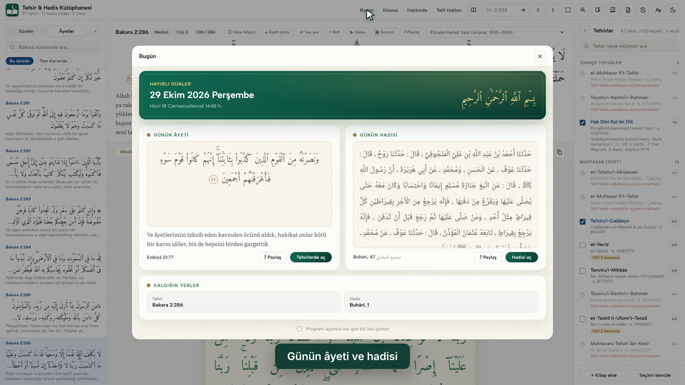
آية وحديث كل يوم
يستقبلك البرنامج بآية اليوم وحديثه، ويذكِّرك بموضع توقفك وبأحدث تعليقاتك.
- وآية اليوم على الشاشة الرئيسة للهاتف أيضًا

الهاتف والحاسوب معًا
على شبكة Wi-Fi نفسها، يزامن رمز من 6 أرقام التعليقات والعلامات والتظليلات والختمة والحفظ.
- لا يُرسل شيء إلى الإنترنت ولا إلى أي خادم
- نسخة احتياطية في ملف واحد والاستعادة
بثلاث لغات: Türkçe · English · العربية
كل قوائم البرنامج وأزراره ودليله وجولته التعريفية متاحة بالتركية والإنجليزية والعربية. وتتغير اللغة بلمسة واحدة من نافذة العرض، ويتبع البرنامج لغة جهازك عند التشغيل الأول. أما نصوص الكتب نفسها (التفسير والحديث والشرح والمعجم) فتبقى كما هي في مصادرها.


In English
Read the Qur'an with 60 tafsirs, 17 hadith books with their chains and commentaries, 8 classical dictionaries and 29 reciters. Free, ad-free and offline once installed — for Windows, Mac, Linux and Android.
بالعربية
اقرأ القرآن مع 60 تفسيرًا، و17 كتابًا في الحديث بأسانيدها وشروحها، و8 معاجم قديمة، و29 قارئًا. مجاني وبلا إعلانات ويعمل دون اتصال بعد التثبيت، على Windows وMac وLinux وAndroid.
كيف أغيِّر اللغة؟
العرض (Aa) › اللغة. وفي الهاتف من قائمة ⋯ في الأعلى: «العرض واللغة». عند اختيار الإنجليزية تُفتح الترجمة الإنجليزية، وعند اختيار العربية يُعرض النص العربي وحده.
الأدعية والأسماء الحسنى
أدعية القرآن، وأدعية السنة المتحقَّق من مصادرها في كتب الحديث، وأسماء الله التسعة والتسعون في قسم واحد.
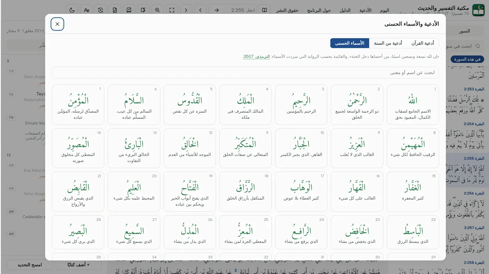
الأدعية بمصادرها
- 35 دعاءً من القرآن: نص المصحف والترجمة التي اخترتها؛ والانتقال إلى الآية بلمسة واحدة
- 20 دعاءً من السنة: سيد الاستغفار، والسفر، والمريض، والكرب، والنوم… والمس المصدر ليُفتح الحديث كاملًا
- الأسماء الحسنى: الأسماء التسعة والتسعون برواية الترمذي، مع النطق والمعنى؛ والبحث بالاسم أو المعنى
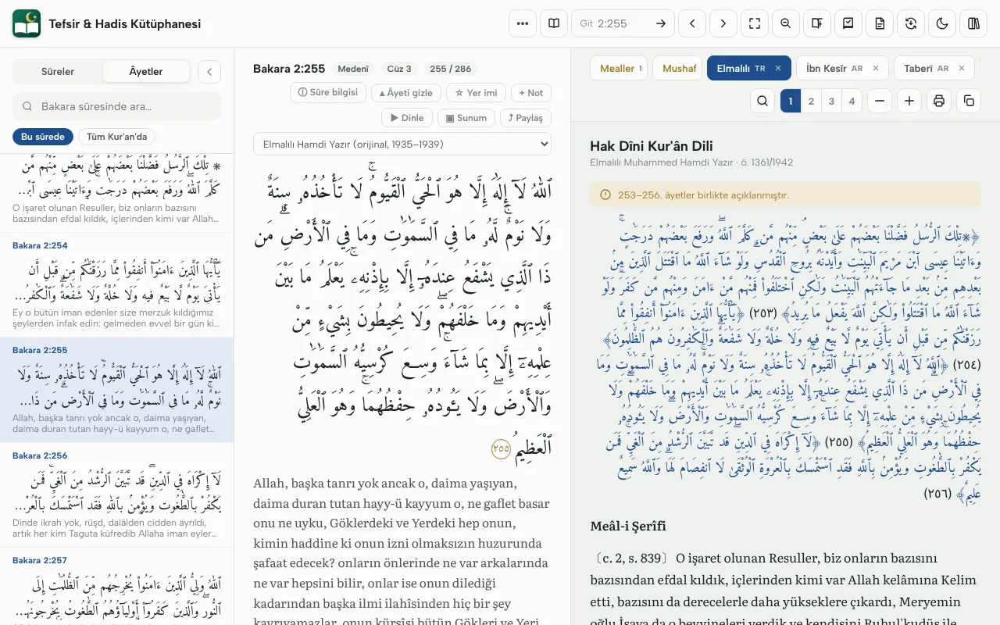
متجاوران في الوضع الأفقي
- عند إمالة الجهاز اللوحي أو الهاتف أفقيًا: الآية في جانب والتفسير في الجانب الآخر
- يتحرك كل جانب وحده؛ ويمكن اختيار التجاور دائمًا من العرض
- وعند تصغير النافذة تصغر صفحة المصحف لتتسع أيضًا
على كل جهاز
Windows وMac وLinux وAndroid. تطبيق الهاتف هو البرنامج نفسه الذي في الحاسوب؛ وكل الكتب والميزات موجودة في الهاتف أيضًا.
Windows
Windows 10 و11، 64 بت. يُنزِّل المثبِّت حزم البيانات بنفسه، وتأتي التحديثات من داخل البرنامج.
Android
الهواتف والأجهزة اللوحية بنظام Android 8.0 فما فوق، من Google Play. يتولى Google Play التحديثات؛ وآية اليوم على الشاشة الرئيسية.
Mac وLinux
أجهزة Mac بمعالج Apple Silicon (M1–M4) وIntel؛ وLinux بنظام 64 بت. تُنزَّل البيانات عند التشغيل الأول.
المكتبة
كل النصوص قائمة على طبعات مطبوعة؛ ويُذكر الجزء والصفحة في الشروح والمعاجم، ويمكن الإحالة إليها.
Türkçe
ألمالِلي محمد حمدي يازر، «حق ديني قرآن ديلي» (الطبعة الأولى 1935–1939). الترجمات: صحيح إنترناشونال (الإنجليزية)، ألمالِلي، مجمع الملك فهد، مركز رواد للترجمة
تفاسير المأثور · 11
الطبري، ابن أبي حاتم، ابن كثير، السيوطي (الدر المنثور)، البغوي، الثعلبي، مقاتل…
تفاسير الدراية · 26
الماتريدي، الزمخشري، الرازي، القرطبي، البيضاوي، النسفي، أبو حيان، أبو السعود، الآلوسي، الشوكاني…
التفاسير الإشارية · 9
التستري، السلمي، القشيري، البقلي، نجم الدين كبرى، الكاشاني، روح البيان، ابن عجيبة…
المختصرات وغيرها · 13
الجلالين، الواحدي، ابن جزي، المنار، سفيان الثوري، النسائي، ابن عرفة، الدر المصون…
الحديث · 17 كتابًا
الكتب الستة، الموطأ، المسند، الدارمي، المستدرك، ابن حبان، ابن خزيمة، المصنفات، السنن الكبرى للبيهقي، مجمع الزوائد
الشروح · 17
فتح الباري، عمدة القاري، إرشاد الساري، المنهاج، عون المعبود، تحفة الأحوذي…
المعاجم · 8
النهاية، لسان العرب، تاج العروس، القاموس المحيط، الصحاح، مقاييس اللغة، المصباح المنير، مشارق الأنوار
التلاوة · 29 قارئًا
تسجيلات EveryAyah: العفاسي، الحصري (مرتل، مجود، معلم)، عبد الباسط، المنشاوي، السديس، الشريم، الشاطري…
التنزيل والتثبيت
يكفي تنزيل ملف واحد؛ وتُنزَّل البيانات اللازمة وحدها، ويُتحقق من سلامة كل ملف.
- Windows: Kurulum.exe— نزِّله وشغِّله. يُنزِّل المثبِّت بيانات التفاسير وكتب الحديث، وحزم الشروح والمعاجم إن اخترتها.
- Android (Google Play): التطبيق الآن في مرحلة الاختبار على Google Play، ويمكنك تثبيته بخطوات قليلة. أولًا انضم إلى مجموعة الاختبار، ثم بحساب Google نفسه افتح رابط الاختبار واضغط «كن مختبِرًا» وثبّت التطبيق من Google Play. تُنزَّل البيانات مرة واحدة عند أول تشغيل.
- Mac وLinux: Apple Silicon · Intel · Linux. فُكَّ الحزمة وشغِّل البرنامج؛ تُنزَّل البيانات عند التشغيل الأول.
إذا ظهر تحذير في Windows: لأن البرنامج لم يُوقَّع بعد بشهادة ناشر، قد يقول Windows إنه «حمى جهاز الكمبيوتر». مزيد من المعلومات › تشغيل على أي حال للمتابعة.
إذا ظهر تحذير في Mac عند التشغيل الأول: لأن البرنامج لم يُوقَّع بعد من Apple، قد يقول macOS إنه تعذّر التحقق من التطبيق. اضغط تم ثم افتحه عبر إعدادات النظام › الخصوصية والأمان › فتح على أي حال ؛ ويكفي ذلك مرة واحدة. وإذا قال إن التطبيق «تالف» فشغّل هذا السطر في Terminal ثم افتح التطبيق مرة أخرى: xattr -cr "/Applications/Tefsir ve Hadis Kütüphanesi.app"
ادعم المشروع
مكتبة التفسير والحديث مجانية وستبقى مجانية: لا إعلانات، ولا حسابات، ولا ميزات مدفوعة.
دعم تطوعي
إن أردت المساهمة في تطوير البرنامج وإعداد كتب جديدة وتكاليف مثل الخوادم وشهادة التوقيع، فيمكنك دعمه. لا يُعطى مقابل ذلك شيء، ولا تتوقف عليه أي ميزة في البرنامج.
الشفافية
يُستقبل الدعم عبر منصة تبرعات باسم شريك المشروع كرم أوزونر. ويُنشر في هذه الصفحة مرة في السنة بيان أوجه إنفاقه.
طرق أخرى
التوصية بالبرنامج، والإبلاغ عن الأخطاء، والدعاء لنا، دعم كبير أيضًا.
الأسئلة الشائعة
هل هو مدفوع؟
لا. البرنامج وكل الكتب مجانية، ولا توجد إعلانات.
هل أحتاج إلى الإنترنت؟
تُنزَّل البيانات مرة واحدة عند التثبيت والتشغيل الأول فقط، ثم يعمل البرنامج دون اتصال. تُجلب التلاوة من الإنترنت عند أول استماع للآية، ويمكنك تنزيل السورة أو الجزء أو القرآن كله مسبقًا.
هل تُرسل معلوماتي إلى أي مكان؟
لا. تعليقاتك وحفظك وتسجيلاتك تبقى في جهازك فقط؛ وفي متابعة التلاوة يُتعرَّف على صوت الميكروفون في الجهاز نفسه ولا يُرسل إلى أي مكان. يحصي البرنامج فقط، دون تحديد الهوية، أي قسم يُستعمل، ويمكن إيقاف ذلك من العرض. والمزامنة أيضًا لا تكون إلا بين جهازين على شبكة Wi-Fi نفسها.
كيف أزامن الهاتف والحاسوب؟
والجهازان على شبكة Wi-Fi نفسها: التعليقات › المزامنة. اختر في الهاتف «أظهر الرمز»، وأدخل في الحاسوب عنوان الهاتف والرمز المكوَّن من 6 أرقام.
هل يتوفر بلغات أخرى؟
نعم. الواجهة بالتركية والإنجليزية والعربية، وتُغيَّر من العرض › اللغة. تأتي الواجهة الإنجليزية مع ترجمة صحيح إنترناشونال، وفي العربية تتجه الصفحة من اليمين إلى اليسار.
هل يعمل على iPhone؟
ليس الآن؛ تتوفر إصدارات Windows وMac وLinux وAndroid.
لماذا بعض التفاسير والترجمات المعاصرة مغلقة؟
الأعمال التي ما زالت حقوقها محفوظة لا تُدرج دون إذن أصحابها؛ وتظهر أسماؤها في القائمة، وتُفتح كلما حصل الإذن.
ماذا أفعل إذا وجدت خطأ؟
أبلغ عنه بزر «أبلِغ عن خطأ» أو بزر «راوٍ خطأ» في الإسناد داخل البرنامج، أو بالكتابة إلى tefsirhadiskutuphanesi@gmail.com .
حقوق النشر
توفي مؤلفو الكتب القديمة منذ قرون؛ ولم تُدرج حواشي المحققين ومقدماتهم وملاحقهم.
التفاسير والترجمات المعاصرة المحفوظة الحقوق مدرجة بأسمائها في البرنامج، لكن نصوصها غير موجودة فيه ولا تُفتح. وستُفتح كلما حصل الإذن من أصحاب الحقوق. إن كنت صاحب حق فاكتب إلى tefsirhadiskutuphanesi@gmail.com .